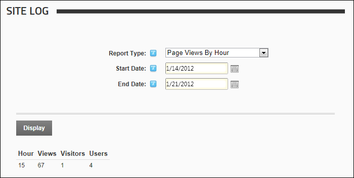

Page Views By Hour Report
The Page Views By Hour report provides a summary list of the number of visitors and users who viewed the site each hour for the selected day range.
Report Fields:
- Hour: The hour that the visitor first came to the site. This field uses a 24 hour clock
- Views: Number of views for the hour
- Visitors: The total number of all visitors for the hour
- Users: Number of registered user visits for the hour

The Page Views By Hour Report